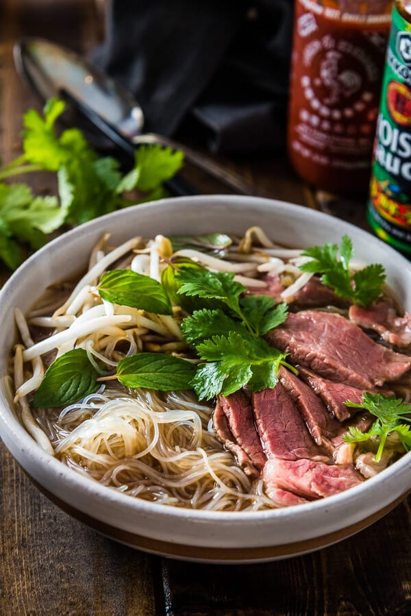

Soup is a primarily liquid food, generally served warm or hot (but may be cool or cold), that is made by combining ingredients of meat or vegetables with stock, milk, or water. Hot soups are additionally characterized by boiling solid ingredients in liquids in a pot until the flavors are extracted, forming a broth. Soups are similar to stews, and in some cases there may not be a clear distinction between the two; however, soups generally have more liquid (broth) than stews
The earliest evidence for soup in human culinary practice dates to the Upper Palaeolithic period when thermally
altered rocks became commonplace in the archaeological record. Small boiling pits are present on the Gravettian
site Pavlov VI. Cobbles were heated on the hearth and then placed into the water to bring it to boil.
However, the antiquity of soup is highly contested. Based on ethnographic evidence, some archaeologists
conjecture that early humans employed hides and watertight baskets to boil water
The word soup comes from French soupe ("soup", "broth"), which comes through Vulgar Latin suppa
("bread soaked in broth") from a Germanic source, from which also comes the word "sop", a piece
of bread used to soak up soup or a thick stew.
Canned soup can be condensed, in which case it is prepared by adding water (or sometimes milk) or it can be "ready-to-eat", meaning that no additional liquid is needed before eating. Condensed soup (invented in 1897 by John T. Dorrance, a chemist with the Campbell Soup Company) allows soup to be packaged into a smaller can and sold at a lower price than other canned soups. The soup is usually doubled in volume by adding a "can full" of water or milk, about 10 US fluid ounces (300 ml). The "ready-to-eat" variant can be prepared by simply heating the contents of the can on a kitchen stove or in a microwave oven, rather than actually cooking anything. Such soups can be used as a base for homemade soups, with the consumer adding anything from a few vegetables to eggs, meat, cream or pasta. Since the 1990s, the canned soup market has burgeoned, with non-condensed soups marketed as "ready-to-eat", so they require no additional liquid to prepare.[citation needed] Microwaveable bowls have expanded the "ready-to-eat" canned soup market even more, offering convenience (especially in workplaces), and making for popular lunch items. In response to concerns over the negative health effects of excessive salt intake, some soup manufacturers have introduced reduced-salt versions of popular soups. Today, Campbell's Tomato (introduced in 1897), Cream of Mushroom, and Chicken Noodle (introduced in 1934) are three of the most popular soups in America. Americans consume approximately 2.5 billion bowls of these three soups alone each year. Other popular brands of soup include Progresso.
Fruit soups are prepared using fruit as a primary ingredient, and may be served warm or cold depending on the recipe. Many varieties of fruit soups exist, and they may be prepared based upon the availability of seasonal fruit.
Cold soups are a particular variation on the traditional soup, wherein the temperature when served is kept at or below room temperature. They may be sweet or savory. In summer, sweet cold soups can form part of a dessert tray. An example of a savory chilled soup is gazpacho, a chilled vegetable-based soup originating from Spain.[12] Vichyssoise is a cold purée of potatoes, leeks, and cream.
For more information on Soups visit: Wikipedia's List of Soup
Here are some other articles you may like: